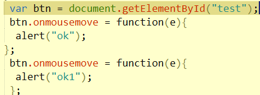

这种做法在FireFox、Chrome、Safari等遵循W3C规范的浏览器下是没有问题的， 唯独在IE(暂时仅限于8.0以下版本)下是行不通的，IE采用了一种非标准的方式，并不是将事件作为函数参数传入， 而是将事件作为window对象的event属性：window.event、window.event.screenX...所以就有了兼容性的问题
事件被触发时，会默认传入一个参数e，表示事件对象，通过e，
我们可以获取很多有用的信息，比如点击的坐标、具体触发该事件的dom元素等等。
基于DOM的事件，对于同一个dom节点而言，只能注册一个，后边注册的同种事件会覆盖之前注册的。

结果会输出ok1。